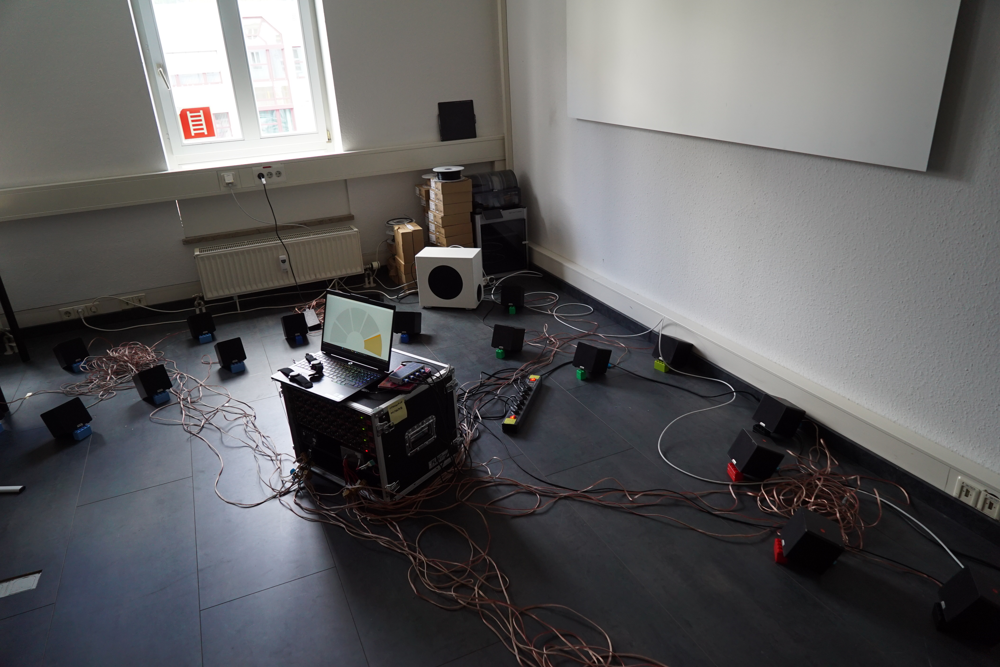
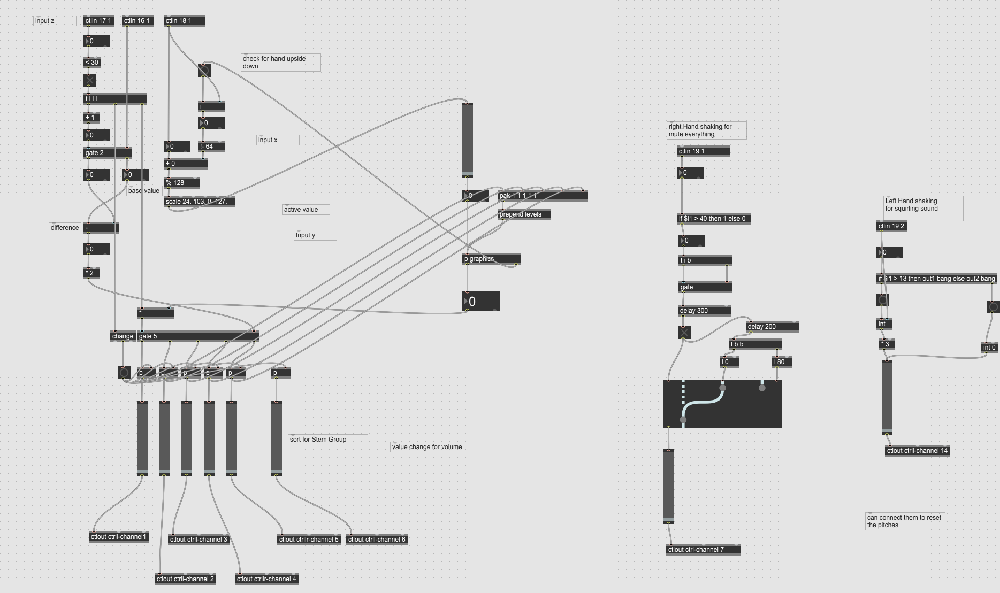
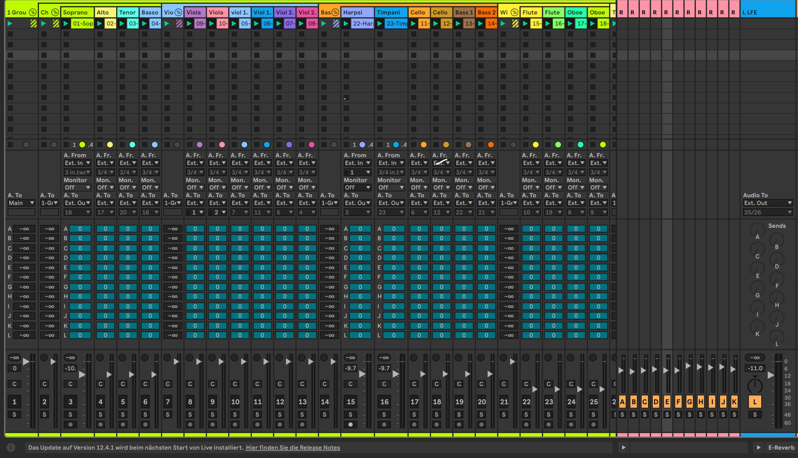
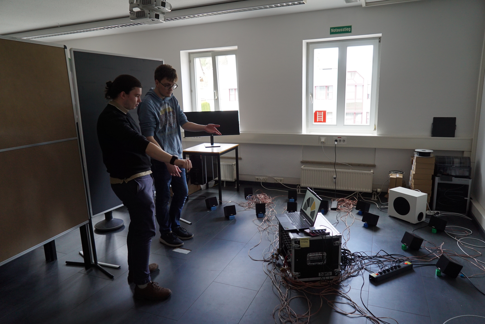

About
Did you ever think about how cool it would be to control an orchestra yourself instead of only listening to one. Interactive Orchestra is an interactive application in which the player takes control of 5 Instrumental Groups, of 24 individually played Instrumental string tracks from a looped and edited Orchestral composition. The Groups can be controlled by a "SOMI-1" bracelet, which supports rotation and position sensors. The Player can turn groups on and off, their volume and modify pitch of the active groups.
The project was created over approximately 2 weeks as part of the sound module in the 3rd semester. Unfortunately there was not enough time to implement features such as adjustable speed and additional interactions.
my contributions
- Developed the application concept and overall project idea.
- Created and implemented the Max Patch for communication and interaction between
- Configured and integrated the audio hardware and software setup, including speakers, rack equipment, and supporting applications.



